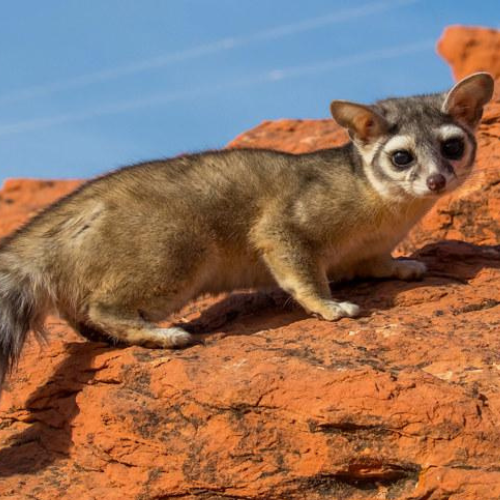
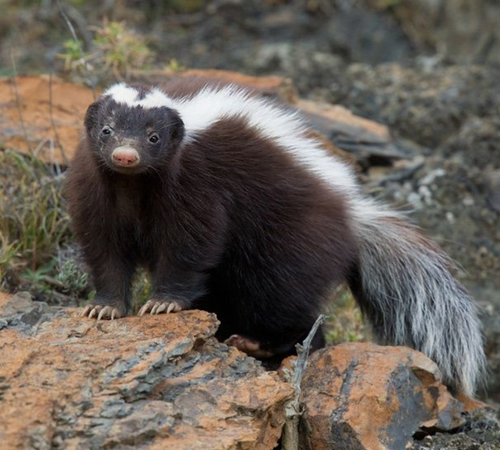

This species is the largest native animal in the park with males weighing up to 300 lbs (135 kg), though two nonnative species living in the park, bison and elk are larger.
Though bighorn are generally associated with mountainous terrain, the unique landscape found in the Grand Canyon provide excellent habitat unlike any other on earth. The canyons have provided remote refuges for these animals and this is the only non-reintroduced population of desert bighorn.

Ringtail.
This small mammal, often called a ringtail cat, miner's cat, or bassarisk, is Arizona's state mammal. It is a common, albeit rarely-seen member of Grand Canyon's fauna. The musky smell they excrete deters would be predators such as foxes, coyotes, and bobcats.

Hog-nosed Skunk.
This mammal is identified by their white back and full tail, hog-nosed skunks are a rarely-seen new arrival in the Grand Canyon
They are one of the largest skunks in the world, it can grow up to 2.7 feet (82.5cm) in length
The hog-nosed skunk is identified by a large, broad white stripe running from the head to the all-white tail